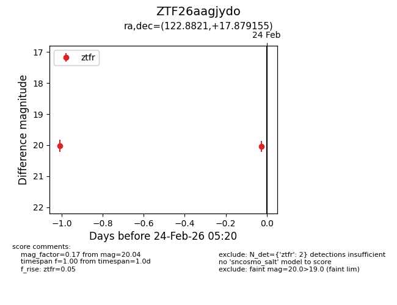
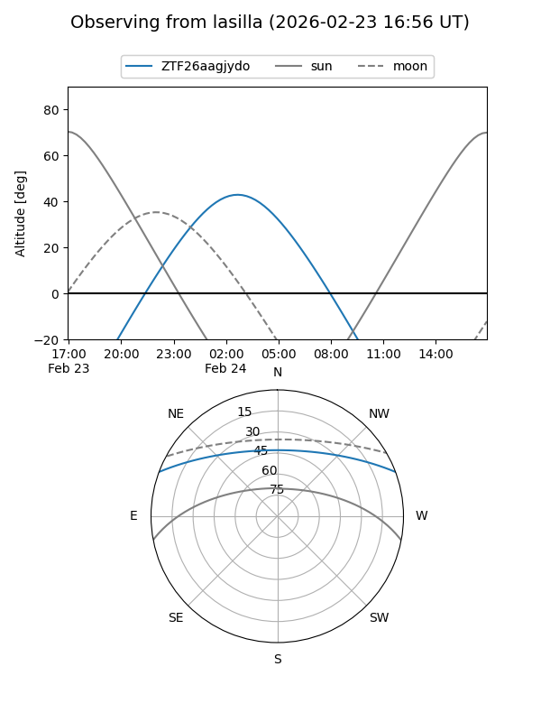
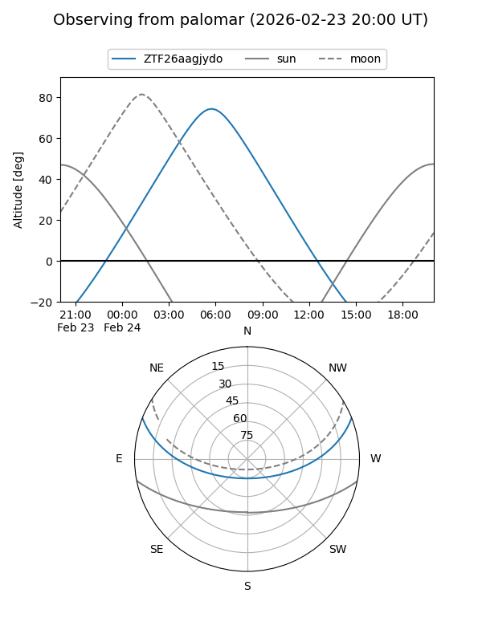

ZTF26aagjydo
Target ZTF26aagjydo at 2026-02-24 09:08
Aliases and brokers:
FINK: link
Lasair: link
ALeRCE: link
alt names
ZTF26aagjydo (ztf,fink_ztf)
Coordinates:
equatorial (ra, dec) = 122.8821,+17.87915
equatorial (HMS+DMS) = 08:11:31.71,+17:52:44.96
galactic (l, b) = (204.9959,+25.46755)
Flags:
Photometry:
last ztfr=20.04
2 ztfr detections
Lightcurve

Visibility


Additional plots